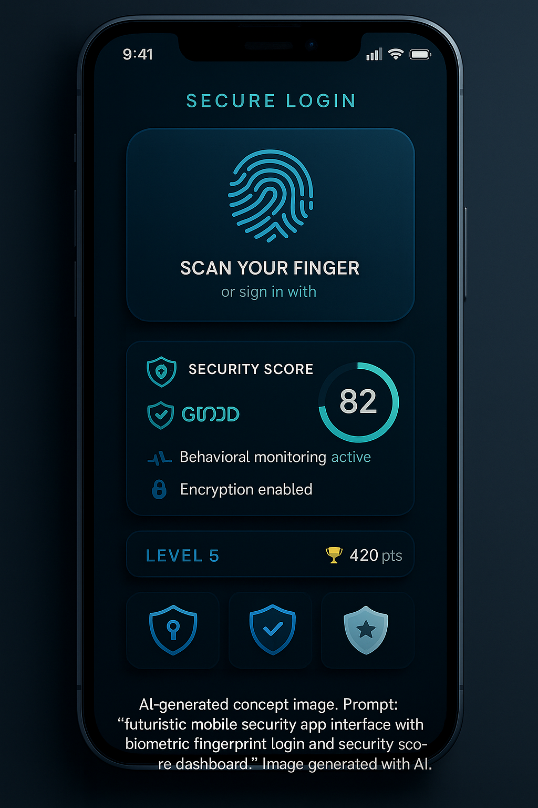
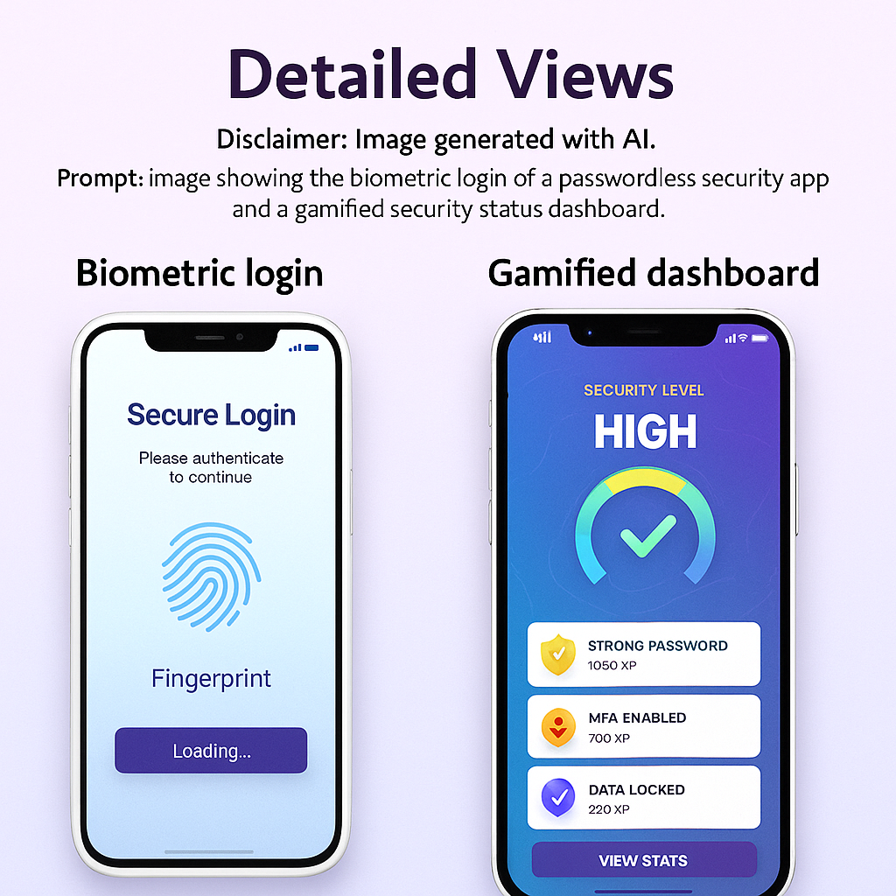
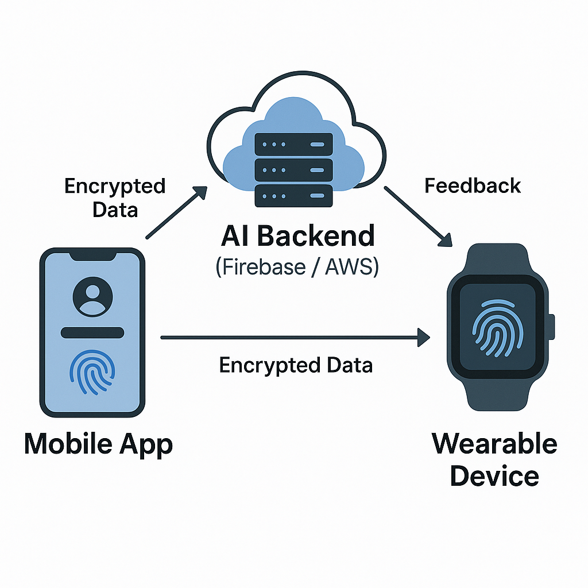
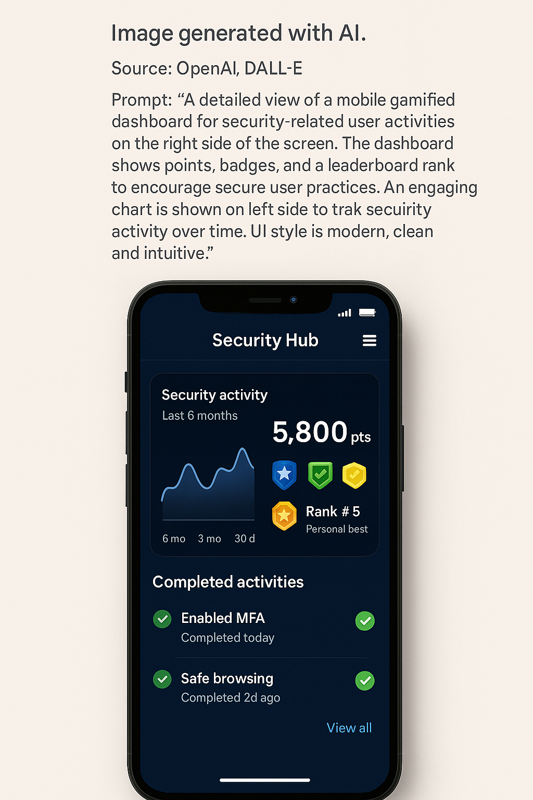

SIP — Passwordless Innovative Security Solutions
Problem Statement
Remembering and managing dozens of complex passwords is overwhelming, leading many to reuse weak credentials or write them down. This creates serious risk to personal data, finances, and organizational systems. A secure, efficient, and user-friendly alternative to traditional passwords is urgently needed.
Innovation Claim (Elevator Pitch)
This project is innovative because it adds adaptive anomaly detection to a passwordless login flow. Instead of stopping at the biometric scan, the prototype evaluates behavior patterns, flags suspicious sessions, and learns from false-positive feedback to reduce unnecessary alerts over time.
Project Description
The working prototype is intentionally scoped to one core deliverable: a simulated biometric login interface connected to a lightweight anomaly-detection model. After login, the system scores the session using factors such as login time, device familiarity, and location pattern. If the session is flagged, the user can mark it as a false positive, and the prototype adjusts its threshold to demonstrate adaptive behavior.
Scope & Timeline
- Phase 1: Define the problem, prior art, and narrowed prototype scope
- Phase 2: Build the simulated biometric login and session-scoring logic
- Phase 3: Add false-positive feedback and threshold adjustment behavior
- Phase 4: Polish the demo, document the process, and prepare the showcase
Field, Classes, Skills
Field: Cybersecurity, Software & App Development
Classes: Mobile App Dev (Android/iOS); Cybersecurity Fundamentals; Machine Learning & AI; IoT & Embedded Systems
Skills: Biometric API integration; encryption/tokenization; Python/C#/JavaScript; NFC/Bluetooth IoT programming
Prior Art & Differentiation
Similar Products
- Microsoft Authenticator: Passwordless/MFA via device biometrics.
- 1Password: Secure credential vault and autofill.
- Windows Hello / common biometric login flows: Existing biometric access points that authenticate but do not adapt to false positives the way this prototype does.
How This Differs
- Behavior-based anomaly detection tied directly to the login result
- User feedback loop for false-positive correction
- Adaptive threshold changes that visibly demonstrate learning behavior
References (APA)
Microsoft. (2023). Microsoft Authenticator. https://www.microsoft.com/en-us/security/mobile-authenticator-app
AgileBits Inc. (2024). 1Password. https://1password.com
Yubico AB. (2023). YubiKey Security Keys. https://www.yubico.com
Design & Prototype Visuals




Disclaimer: Some visuals were generated using AI tools for concept exploration and were used to communicate intended design direction.
Current SIP Brief & Working Prototype
The approved scope for this project is a working prototype that demonstrates AI-assisted anomaly detection within a passwordless login flow. The prototype simulates a biometric scan, evaluates session context, flags suspicious behavior, and allows the user to correct a false positive so the system can adapt.
Working Prototype: Open the live browser demo
Current status: The prototype is functional and ready for presentation. Remaining work is focused on documentation, explanation, and showcase polish rather than expanding scope.